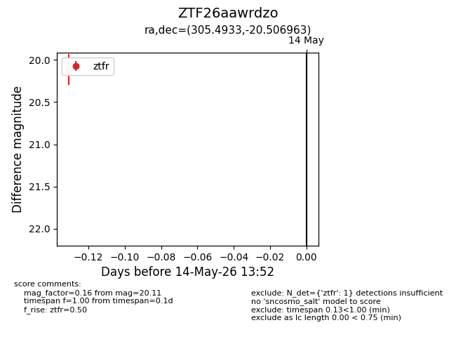
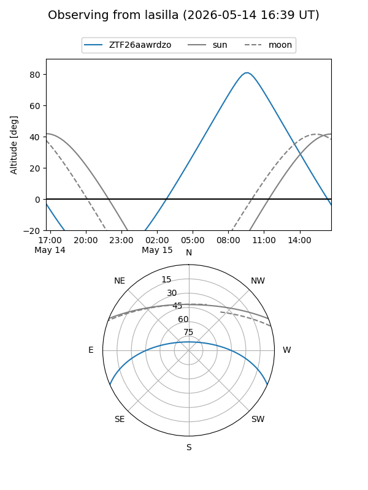
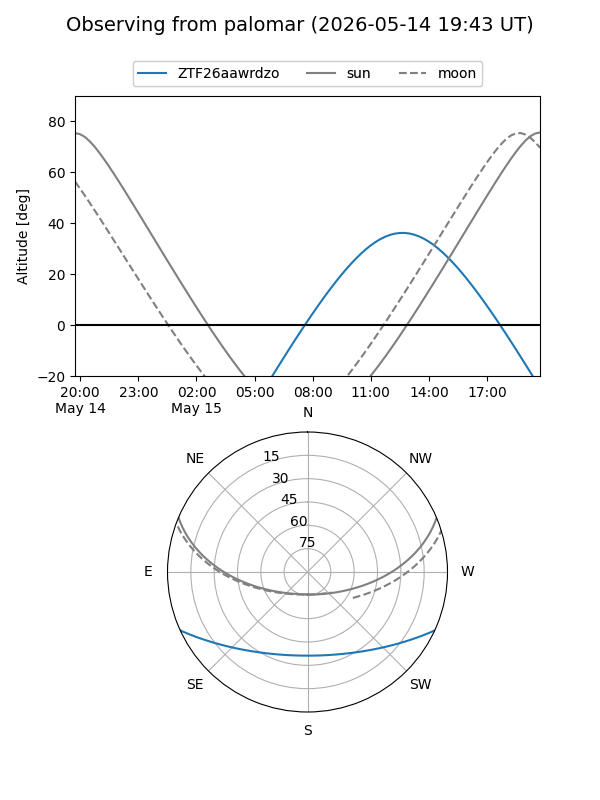

ZTF26aawrdzo
Target ZTF26aawrdzo at 2026-05-14 13:54
Aliases and brokers:
FINK: link
Lasair: link
ALeRCE: link
alt names
ZTF26aawrdzo (ztf,fink_ztf)
Coordinates:
equatorial (ra, dec) = 305.4933,-20.50696
equatorial (HMS+DMS) = 20:21:58.39,-20:30:25.07
galactic (l, b) = (23.2544,-28.72065)
Flags:
Photometry:
last ztfr=20.11
1 ztfr detections
Lightcurve

Visibility


Additional plots